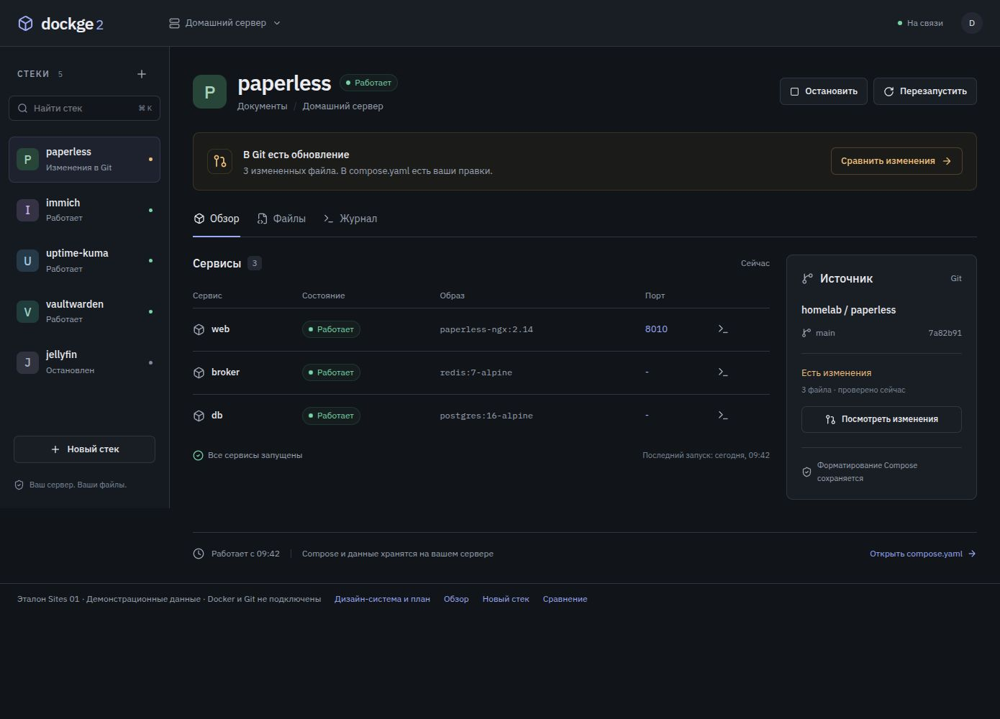
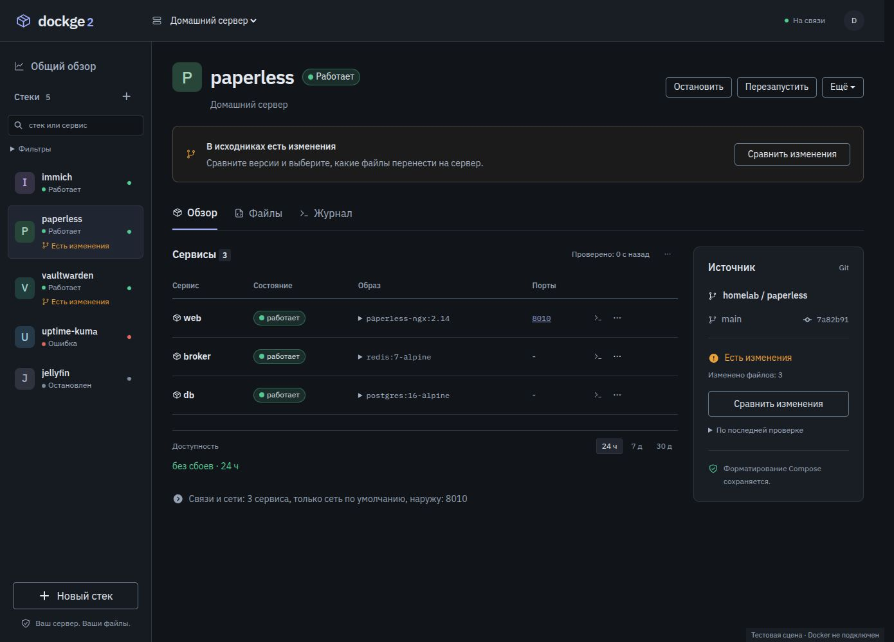
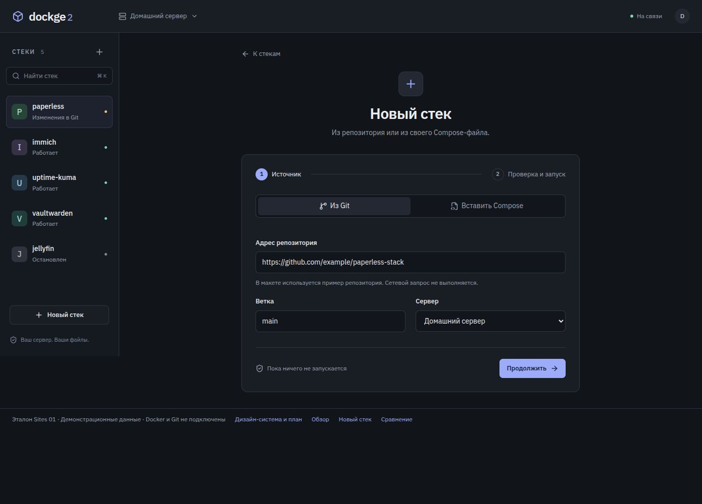
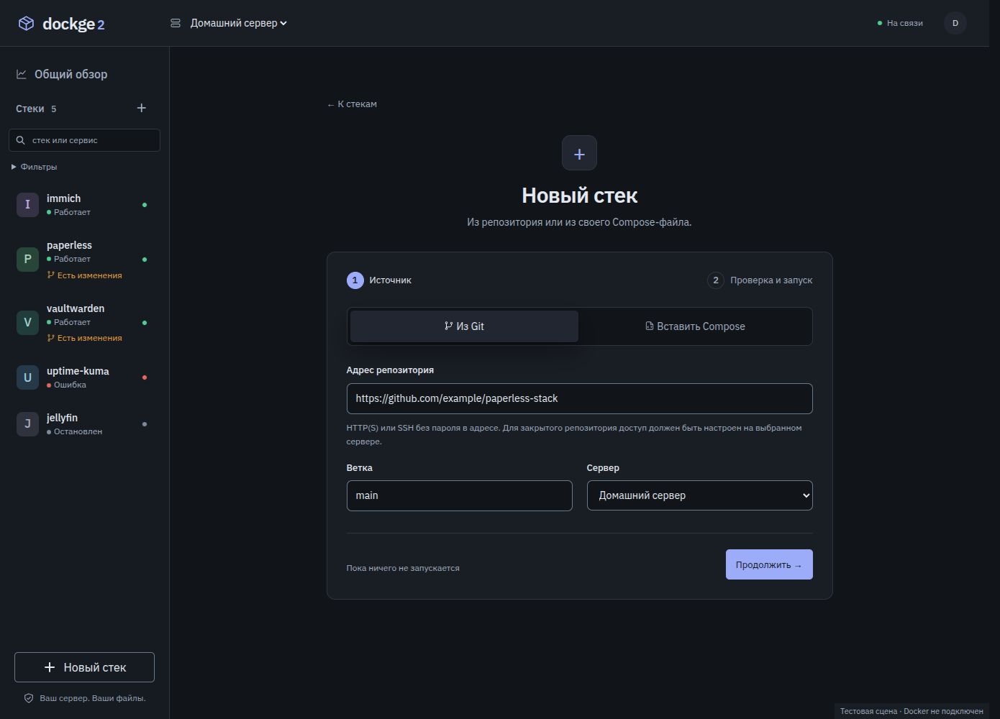
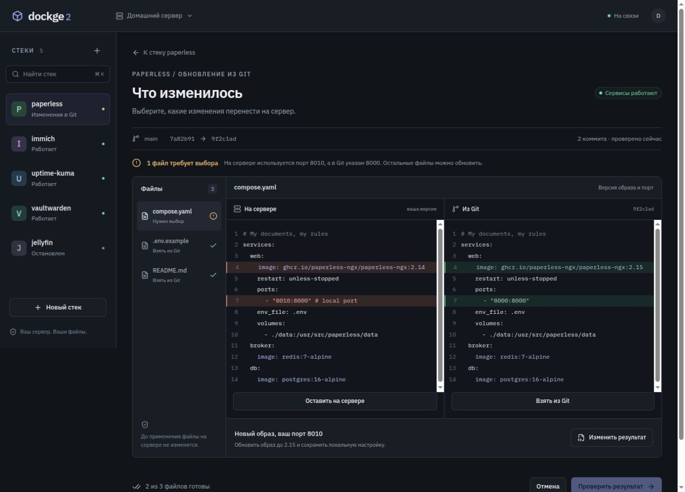
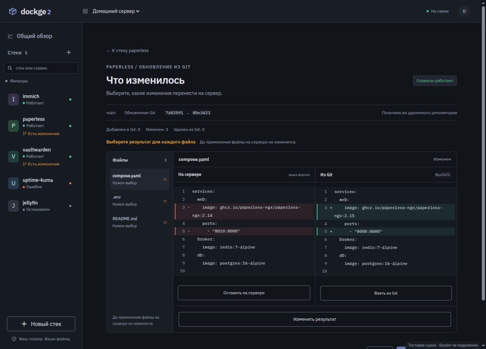

Знакомый Dockge / 13 сентября 2026
Сначала система. Затем интерфейс.
Локальный эталон из исходников Sites, разбор отличий и конкретный дизайн-план. Эта версия подготовлена для согласования. Рабочее приложение не изменено.
01 / Исходный дизайн
Опубликованная версия 1, исходный коммит 7bce7fc. Те же HTML, стили, значки и локальные шрифты. Убрана только оболочка презентации Sites.
Взаимодействия демонстрационные. Нет авторизации Sites, запросов к Docker или Git. Экспорт сохраняет ограничения исходного макета.
02 / Предлагаемая система
Сохраняем спокойную компоновку, Plex и контурные значки. Уточняем роли текста, интерактивные состояния и контракты компонентов. Светлая тема и реальные ошибки получают те же правила.
Палитра и примеры ниже относятся к предложению. Они не меняют замороженный эталон.
Типографика
Два шрифта, четкие роли
Что изменилось
Выбранные файлы
Выберите, какие изменения перенести на сервер.
Адрес репозитория · Сервисы · Есть изменения
IBM Plex Mono / 400
Код, версии образов, коммиты и технические значения. 13/21 для кода, 12/18 для короткого хеша. Не использовать для обычных пояснений.
services:
web:
image: paperless-ngx:2.15
ports:
- "8010:8000" # мой портmain · 7a82b91 → 9f2c1ad
WOFF2, кириллица и латиница, Sans 400/500/600 и Mono 400. Файлы и OFL-лицензии включены. Без Google Fonts и внешнего CDN.
Токены
Цвет обозначает смысл
Темный фон #111419, панель #191d24, акцент #9dacf9 сохранены из Sites. Светлая тема - адаптация, не перенос направления 02. Тонкие разделители и границы полей имеют разные роли; видимость поля и фокуса проверяется отдельно.
Контракты компонентов
Одинаковое действие выглядит одинаково
Кнопки
Состояния
Примеры можно нажать и пройти клавишей Tab.
Размеры на согласование: отступы 4/8/12/16/24/32/40; поле 42 px, цель касания 44 px; радиусы 7 px для полей, 8-10 px для панелей. Семантические имена токенов вместо отдельных цветов в страницах.
Новая визуальная сверка
Что уже сходится, что расходится
Справа настоящие Vue-компоненты текущей реализации на изолированных данных. Состояния второстепенных стеков и содержимое Git-файлов различаются: эти отличия не считаются дефектами оформления.
1. Обзор стека
{kind=link}

{kind=link}

Сходятся каркас, крупный заголовок, таблица сервисов и карточка источника. Расходятся плотность списка, размеры действий, технические подписи и нижняя зона обзора. Общий обзор, фильтры и доступность нужны продукту, но требуют компактного места.
2. Новый стек
{kind=link}

{kind=link}

Композиция близка. Измерено при 1390 x 1000: карточка 670 px в эталоне и 704 px в приложении; верх карточки около 306 и 350 px; переключатель источника 46 и 54 px. В приложении нет линии между этапами и щита в нижней подсказке. Контрастный фокус поля не является дефектом.
3. Что изменилось
{kind=link}

{kind=link}

Заголовок и схема двух сторон сохранены. Требуют согласования плотность служебных сообщений, подсветка строк, положение выбора результата и заключительное действие. В макете два файла выбраны заранее; приложение требует явного выбора всех файлов. Это различие поведения, его нельзя менять ради похожей картинки.
Предлагаемый порядок
Эталон → система → компоненты → экраны
Зафиксировать эталон
Локальный HTML, исходная версия, ресурсы и снимки. Готово как основа; каталог не импортируется в приложение.
Согласовать дизайн-систему 0.1
Шрифты, шкала текста, цвета двух тем, плотность, значки, кнопки, поля, состояния, адаптивность. Это текущая точка согласования.
Проверить правила на трех сценариях
Обзор стека, создание Git/Compose/docker run, сравнение файлов. Добавить ошибки, загрузку, роли, длинные имена, сохранение без запуска.
Внедрить общие компоненты
После утверждения: токены и примитивы Vue, затем список, обзор, создание и Git. Не переносить целиком Tailwind/React из макета и не менять серверные контракты ради CSS.
Принять результат по отдельным критериям
Парные снимки и список осознанных отличий, затем функциональные проверки. Вход без сдвигов, темы, клавиатура, телефон, сохранность Compose и роли.
Саморевью плана
Что исправлено в подходе
Источник теперь локальный и версионированный. Эталон отделен от предложений. Есть конкретные шрифты и размеры. Пройденный тест больше не считается доказательством визуального сходства.
Что нельзя потерять
Конвертация docker run, закрытые учетные записи, роли MCP, темы, uptime, точные байты Compose, выбор файлов до записи и различие сохранения и развертывания.
Ограничения проверки
Это дизайн-аудит и локальная демонстрация. Контейнеры не менялись. Матрица реальных ошибок, авторизация и производительность входа требуют отдельной проверки при внедрении. Сам эталон не является полной спецификацией продукта.
Практики: IBM Carbon: роли типографики · WCAG 2.2: контраст, увеличение текста, клавиатура и фокус. Используем принципы, не заменяем выбранный дизайн библиотекой Carbon.